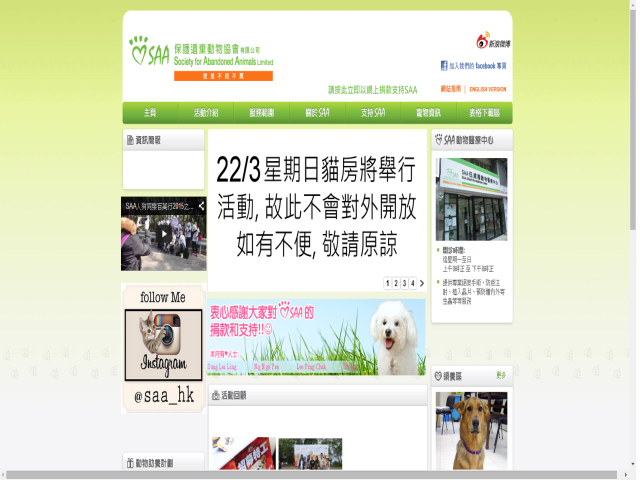

Society for Abandoned Animals Limited (S.A.A.)
Aim & Mission
SAA was established on June 4, 1997 by a group of animal rights' activist. The motto of SAA is "Love Animal, Respect Life, No Killing or Abandoning". It was officially registered as a local charitable organization on May 28, 1998.
After many years of endeavour, SAA has now become the biggest animal sanctuary in Hong Kong. We sincerely thank for the generous donations from all walks of life and support from volunteers' which had made our success possible.
Services & Activities
SAA's Main Services:
- Accepting and taking care of abandoned animals whose owners, having encountered financial difficulties, health problems or restrictions at their residence, could not continue to raise their pets.
- Arranging for adoption services.
- Setting up an animal blood donors' databank (providing backup support for veterinary clinics and pet owners).
- Commencing November 2005, SAA has set up an "Animal Medical Centre" which holds an operation room and isolated wards and assists in the running of the "Trap/Neuter/Return" (TNR) Programme in order to reduce the number of stray animals.
- Animal hotline that gives advice on the following matters: correct way to rear a pet, pet diseases, pet behaviour and psychology; we also assist owners in locating their lost pets.
- Opening the Sanctuary for public visits at designated time.
- Arranging seminars for schools and communities to arouse public awareness on welfare of abandoned animals and the sanctity of life.
- Organizing different kinds of public education to promote all rights entitled by the animals and awareness on respecting life.
SAA's Recent Activities:
- In 2015
- SAA Walkathon 2015
- SAA X Din Dong Charity Red Banner & Red Packet
- SAA X Life Visual Art Photography of Cat Course
- Pet Show 2015
- In 2014
- SAA Walkathon 2014
- Pet Show 2014
- Mini Charity Concert
- 12 night
- One Mintue More
- Dog Day Out
- “Take Me Home” Charity Sale Painting Exhibition
- SAA X Mandycat Charity Red Packet
- Premium Pet Supplies Expo 2014
- SAA Raffle Ticket Sale
Job & Volunteering
Job
Animals Care Attendant
- Work: Feeding and taking care of the animals, and cleaning the shelter.
- Working times: 9 a.m. - 6 p.m.
Volunteering
Dog handler
SAA has been established for more than sixteen years. The existence of SAA relies entirely on generous support from all walks of life. We now launch the “Dog Walker Program”. In this program, after finishing a training course, dog walkers are qualified to walk SAA’s dogs. It not only provides the dogs an opportunity to interact with the surroundings, also the dogs can learn the way to communicate with human which makes them easier to get along with human and therefore leads to a higher chance of adoption. Meanwhile, dog walkers are also benefited through exercising, escaping from the hustle and bustle of city life and enjoying a fresh breath.
Requirements:
- Must be at least 18 years old
- Must be SAA member
- Two Dog Handler Courses (HK$100 each) will be provided
- A Dog Handler Test will be given
- A Dog Handler Badge will be given to those who pass the test
Dog Handlers: Novice Dog Handlers and Advanced Dog Handlers
To apply: please call 2838 0633 if interested
Event Volunteer
We organize many different events every year, like the Walkathon, Flag Day and Raffle Ticket charity sales etc. and the assistance of volunteers is much needed. Moreover, we welcome different organizations, universities and corporates to apply for as volunteering groups.
Requirements:
- Must be at least 16 years old
- Must complete the “Care Animal Ambassador” form
- Volunteering groups must provide service at the shelter at least once before
Shelter Volunteer
Many animal lovers are interested in volunteering at our shelter. Due to various limitations, they are not able to keep pets at home themselves. Helping us out at the shelter gives them an opportunity to come in close contact with the animals.
Requirements:
- Must be at least 18 years old
- Requires physical labor
Time: 9am ~ 1pm and 9am ~ 6pm.
Please call 2838 0633 if interested
Contacts
- Shelter: Section 1, Pak Sha Village, Kiu Hing Road, Yuen Long, N.T.
- Mailing Address: P.O.Box 697, Yuen Long Post Office, N.T.
- Register Address: 19/F, No.3 Lockhart Road, Wan Chai, Hong Kong
- Phone: 2838 0633 / 2778 3988
- Fax: 2891 9979
- Email: saa@saa.org.hk
- Website: http://www.saa.org.hk/index_e.html
- Opening Hours: Wednesday, Friday, Saturdays, Sundays, and public holidays 1:00p.m. – 4:00p.m.
Other Information
Donation Method
- Download the form
- Online Donation
Screen-shot:
back to top